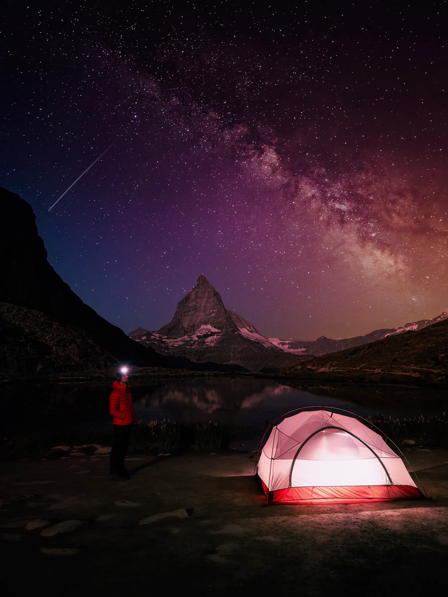

Photo · @leon.helgLAKES
The Matterhorn, doubled. At first light the tip turns red before the rest of the mountain catches up.
Take the Gornergrat Bahn from Zermatt up to Rotenboden. From the station it is a short walk down to the lake. Maybe ten minutes on an easy path.
Shoot wide. 24mm or 35mm. To keep the peak and its reflection in the same frame. The reflection only works if the wind stays down, so cross your fingers for a still morning.
Be in position before sunrise. The red on the tip lasts maybe five minutes before full light floods in and kills the effect.